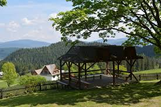
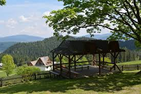

Gorczański Park Narodowy, utworzony w 1981 roku rozporządzeniem Rady Ministrów z dnia 8 sierpnia 1980 r., jest jednym z 23 parków narodowych na terenie Polski. Obejmuje centralne pasmo Gorców, m.in. masywy Turbacza i Gorca. Dyrekcja Gorczańskiego Parku Narodowego znajduje się w Porębie Wielkiej.

 

Muzeum Biograficzne Władysława Orkana (Orkanówka, Dom Władysława Orkana) – muzeum w Porębie Wielkiej (w Gorcach) gromadzące i przechowujące pamiątki związane z pisarzem Władysławem Orkanem. Dom znajduje się przy zielonym szlaku z Niedźwiedzia na Turbacz, 3,5 km od wsi, w przysiółku Zagronie na zboczu Pustki (760 m n.p.m.). Muzeum znajduje się na Szlaku architektury drewnianej województwa małopolskiego, regionu Pogórza Beskidzkiego.

Turbacz – najwyższy szczyt Gorców, znajdujący się w centralnym punkcie pasma i tworzący potężny rozróg[2]. Według większości źródeł ma wysokość 1310 m (np.[3][4]), ale niektóre podają 1314 m[5]. Zbudowany jest z fliszu karpackiego.